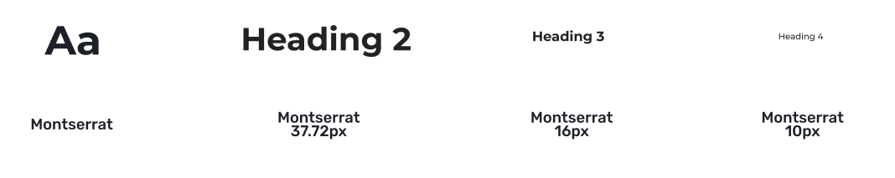

Some of the things that our user persona (a relative of a newly diagnosed patient) may need are not immediately found on the original website.

Redesign the menu so it is better organized. Include only the important things in the order that a new user would want to see them in. Stories would show them other people in a similar situation, the CANRISK test would let them assess their own risk of developing diabetes, and the Get Involved section would allow them to be helpful in various ways.

Diabetes.ca (Diabetes Canada) is an organization that helps individuals find information about the disease: lifestyle management, donating, and participating in events.
While navigating through the website, we have observed that users become lost while searching through various secondary pages, which can cause them to overlook important information. How might we improve diabetes.ca so that users are successful based on how easily they can find the information they need?

.jpg) Goal #1: An intuitive menubar that consists with the important and frequently used sections (according to our user persona) Goal #2: Implement an easy navigiation for users making focused areas more visible on landing page Goal #3: Better categorization of primary, secondary, and teritary pages
Goal #1: An intuitive menubar that consists with the important and frequently used sections (according to our user persona) Goal #2: Implement an easy navigiation for users making focused areas more visible on landing page Goal #3: Better categorization of primary, secondary, and teritary pagesIn order to begin our research, we set up an online survey to gather the most up-to-date data on current users who are familiar with the Diabetes, and those who may or may not use Diabetes Canada. 82% of our surveyors know someone who is effected with Diabetes. 92% percent of our surveyors use the Google search engine to find information about Diabetes, while only 18% of the surveyors use Diabetes Canada.
We had also conducted user testing for the original Diabetes Canada website in order to gain insight on the thinking process while navigating the website. This makes us better understand what works and what needs to be changed or redesigned. We learned that immediately the hero image was not as its highest definition and was too big. The menubar collapsed from the lefthand side (horizontally) which didn’t seem appealing from the user testing.


We created a user persona, Researcher Reed, to illustrate a realistic and typical user of Diabetes Canada. After surveying and testing, we found that our users were not using a website like Diabetes Canada for a significant other or spouse, like we previously thought when creating our proto persona. These individuals had family members diagnosed with diabetes, and were worried about inheriting the disease. With this information, we crafted our user persona- Researcher Reed, a millennial male, with a diabetic father.

The original website had so many sections and it was quite challenging redesign a user flow. We had to reorganize, recategorize and combine some sections. We desired a more minimal appearance on the landing page for a less intimating and underwhelming impression for users. We did a card sorting (open and closed) to make sure we are keeping what is necessary and omit those that seem irrelevant or repetitive.

We created an updated UI style guide, still keeping the original colours from the Diabetes Canada logo.
We started off with low-fi wireframes for our preliminary sketches of the highlighted pages (The CANRISK Test, Get Involved, and Stories). We explored various styles from our UI inspirations to appropriately lay out the content on the pages. We aim to have a more simple layout for easier navigation and intuition. More white space provided a less constricted look.
For the prototypes, we want to make the pages accessible with no dead-ends. We included bread crumbs for easy navigation from and to the pages. The progress bar in the CANRISK Test to communicate with the user on their progress. The interlinking feature of the stories for easy accessibility. We tried to keep everything consistent and unified.
Low-Mid Fidelity Wireframes (Get Involved)

The next plan of action was to create colour palettes and typography that would help communicate the brand’s identity and also give the product an exciting feel.



We have gathered valuable feedback from user testing and applied iterations accordingly, if necessary. The most challenging part but keeping our layout, colour scheme, overall appearance consistent, since my group members and I have different styles when it comes to designing. We needed to make some changes with buttons as the font size needed adjustments. Back buttons and bread crumbs were implemented to help guide the users to previous pages or go forward. We want to make it easy for users to navigate through the contents with less effort as possible.
Designers who include a feedback, testing, or validation research phase will have designs that are more closely aligned with a real user or customer’s needs and goals.
Discuss your experience of testing or gathering feedback on your interaction with users and/or customers. Including photos, data visualizations, charts, or bullet points of findings is a good way of showcasing your work.
High Fidelity Prototype (Get Involved):

This Responsive web design (RWD) project allowed us to explore and understand users in a new form. We were able to collaborate, unify, and compromise our ideas throughout the way. The changes that we applied to the appearance of Diabetes.ca, display the most critical factors to our users. The simplicity and understandability of content are needed. We kept a clear direction of change, and focused on a few specific changes i.e. Homepage, CANRISK test, Get involved, and Stories pages. Keeping true to our non-profit organization's identity and mission helped a lot through this journey.